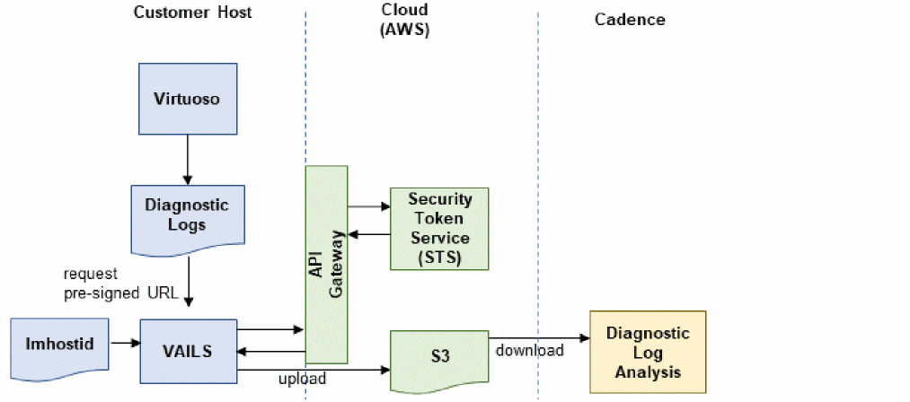

How to Send the Diagnostic Logs to Cadence
Diagnostic logs are sent to Cadence using the cloud storage service Amazon S3, which ensures that only Cadence is able to see the contents of these diagnostic log files.
Using AWS for automatic diagnostic submission ensures that the storage server is always available to accept submissions. All submissions are secure because file transfers to and from the cloud are performed over a transport layer security (TLS) connection. Diagnostic logs are stored in the cloud using AWS - Key Management Service (KMS) server-side encryption.

To summarize, for automatic submission of diagnostic logs using VAILS, you need to ensure that:
- Your systems have access to AWS.
-
The
vails_enabledscript exists and is executable. -
Anonymization rules have been configured based your requirements by modifying the
vailsAnonymizeLog.cfgfile.
Related Topics
Automatic Diagnostic Log Submissions in Virtuoso
Anonymization of Diagnostic Logs
Return to top